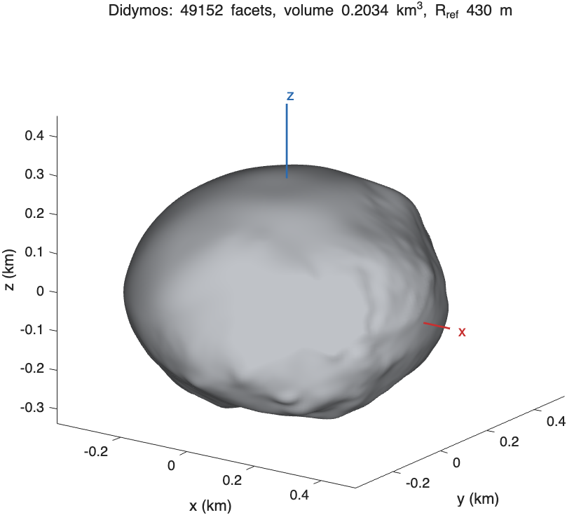

Shape models#
A shape model is a closed triangular mesh, stored in SBTK as a shape structure with vertices in km.
Reading and creating shape models#
| Function | Input |
|---|---|
sbtk.shape.load |
Wavefront OBJ file: v x y z and f i j k records; normals, texture coordinates and faces written as f i/t/n are accepted, other records ignored. The length unit of the file ("km", "m" or "cm") is a required argument. |
sbtk.shape.bundled |
A model shipped with SBTK, by name (table below). |
sbtk.shape.from_arrays |
Face and vertex arrays with their length unit. |
sbtk.shape.ellipsoid |
A triaxial ellipsoid: an icosahedron subdivided level times (20·4^level facets) with vertices projected onto the ellipsoid. |
sbtk.shape.write_obj |
Writes a shape model as OBJ with vertices in km. |
Requirements#
The forward model integrates over the cones from the expansion origin to every facet (Gravity and moment calculations). The mesh must therefore be
- closed: every edge is shared by exactly two facets that traverse it in opposite directions;
- ordered outward: the enclosed volume computed from the facets is positive;
- star-shaped about the expansion origin: every facet faces away from it, so that each ray from the origin crosses the surface once.
sbtk.shape.properties reports all three, the last about the centroid (props). sbtk.gravity.geometry stops
with sbtk:gravity:notStarShaped when a facet faces the expansion origin.
run("/path/to/SBTK/sbtk_setup.m")
shape = sbtk.shape.bundled("didymos");
p = sbtk.shape.properties(shape)
fprintf("volume %.5f km^3, centroid [%.1f %.1f %.1f] m\n", p.volume_km3, 1e3*p.centroid_km)Shape models in the repository#
Files in data/shapes/, lengths in km, in the body-fixed frame of each model ( along the spin axis).
bundled name |
File | Sampling | Facets | Volume (km³) | Description |
|---|---|---|---|---|---|
"didymos" |
didymos_g_9309mm_spc_obj_0000n00000_v003.obj |
9.3 m | 49,152 | 0.20336 | DART stereophotoclinometry (SPC) model of Didymos, version 3 |
"didymos_highres" |
g_01165mm_spc_obj_didy_0000n00000_v003.obj |
1.165 m | 3,145,728 | 0.20381 | The same model at full resolution (not in the repository, Installation) |
"didymos_every8" |
g_01165mm_spc_obj_didy_0000n00000_v003_every8.obj |
9.3 m | 49,152 | 0.20375 | Every 8th grid point of the 1.165 m model |
"dimorphos" |
g_00243mm_spc_obj_dimo_0000n00000_v004_every8.obj |
1.94 m | 49,152 | 0.0017597 | Every 8th grid point of the DART SPC model of Dimorphos, version 4 (before the DART impact) |
"dimorphos_highres" |
g_00243mm_spc_obj_dimo_0000n00000_v004.obj |
0.243 m | 3,145,728 | 0.0017602 | The Dimorphos model at full resolution (not in the repository) |
"bennu" |
bennu_higher_qual.obj |
196,608 | OSIRIS-REx shape model of Bennu | ||
"example_asteroid" |
example_asteroid.obj |
A synthetic body of about 1.2 km, used by the project template | |||
"dimorphos_placeholder" |
dimorphos_placeholder.obj |
20,480 | A synthetic stand-in used by tests; not a mission model |
The 9.3 m Didymos file is distributed separately by the DART team and is not a subsample of the 1.165 m model. For a
homogeneous body with km, tools/make_reduced_shapes.m gives these differences from the
full-resolution models:
| Model compared with the full resolution | Volume | Center of figure | Largest coefficient difference, degree 2 / 3 / 4 |
|---|---|---|---|
didymos_every8 |
−0.030% | 0.01 m | 1.2e-5 / 5.0e-6 / 2.8e-6 |
didymos (9.3 m file) |
−0.224% | 0.35 m | 3.1e-4 / 1.7e-4 / 4.2e-5 |
dimorphos (every 8th point, km) |
−0.031% | 0.00 m | 1.5e-5 / 1.3e-6 / 5.1e-6 |
Differences of this size between the shape used to simulate data and the shape used to invert them act as a systematic error in the coefficients. Measurement packages therefore include the shape model they were made with (Exchange packages).
Reducing high-resolution models#
High-resolution shape models have more facets than coefficients to degree 4 or 5 require. Two functions reduce them:
sbtk.shape.reduce_spckeeps everystep-th grid point of an SPC model stored in its grid order (6 cube faces of vertices, facets), triangulated as the original. The grid is radial, so the result stays star-shaped about the body's center; a cell whose triangles would face the center is split along its other diagonal.sbtk.shape.reduceapplies MATLAB'sreducepatchto any mesh and checks that the result is closed, outward and star-shaped about its centroid; a general reduction can fold facets, in which case it stops withsbtk:shape:reduce.
big = sbtk.shape.load("g_00243mm_spc_obj_dimo_0000n00000_v004.obj", "km"); % q = 512, 3,145,728 facets
small = sbtk.shape.reduce_spc(big, 8); % q = 64, 49,152 facets
sbtk.shape.write_obj(small, "g_00243mm_spc_obj_dimo_0000n00000_v004_every8.obj");Bodies#
A body (body) is a shape model with its total mass and the reference radius of its gravity coefficients.
sbtk.body.from_mass takes the mass; sbtk.body.create takes the bulk density and computes the mass from the
volume. The bulk density is ; the background density of a model with components differs from it
(Density distributions).
body = sbtk.body.from_mass("Didymos", shape, 5.273e11, 0.43); % mass [kg], reference radius [km]
sbtk.body.summary(body)
sbtk.plot.shape(body);
sbtk.plot.shape for the 9.3 m Didymos model: the mesh with its center of figure and axes.